Mastering the game of Go with deep neural networks and tree search
Authors: David Silver, Aja Huang, Chris J. Maddison, Arthur
Guez, Laurent Sifre, George van den Driessche, Julian Schrittwieser, Ioannis
Antonoglou, Veda Panneershelvam, Marc Lanctot, Sander Dieleman, Dominik Grewe,
John Nham, Nal Kalchbrenner, Ilya Sutskever, Timothy Lillicrap, Madeleine
Leach, Koray Kavukcuoglu, Thore Graepel, Demis Hassabis
For class EE/CSC 7700 ML for CPS
Instructor: Dr. Xugui Zhou
Presentation by Group 7: Rishab Meka (Presenter), Bharath
Kollanur
Summarized by Group 6: Cheng Chen, Zhiyong Sui
Summary
This paper introduces a novel sequence transduction model architecture named
the Transformer. This architecture is based solely on attention mechanisms,
eliminating the need for recursion and convolution. The model addresses the
limitations of sequence models that rely on recursive processes, which perform
poorly in parallelization and computational efficiency for longer sequences.
The Transformer adopts an encoder-decoder structure, where the encoder
consists of identical layers with multi-head self-attention and fully
connected feed-forward networks, while the decoder mirrors this structure but
adds a multi-head attention layer on the encoder's output; utilizing scaled
dot-product attention and multi-head attention, the model computes the
importance of key-value pairs based on queries and allows joint attention
across different subspaces, with encoder-decoder attention enabling the
decoder to focus on all input positions, self-attention improving contextual
understanding by attending to all positions within layers, and positional
encodings ensuring the model captures the order of tokens in a sequence.
Slide Outlines
Motivation
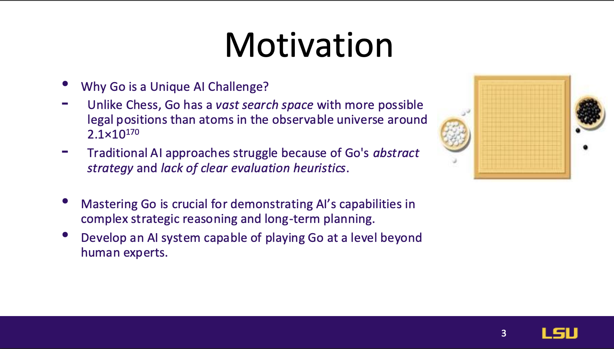
Go poses a unique challenge for AI because of its vast search space, which
is significantly larger than that of chess, making traditional AI
techniques ineffective. Mastering Go is seen as a key test of AI’s ability
to handle complex, strategic decision-making and long-term planning.
Introduction
 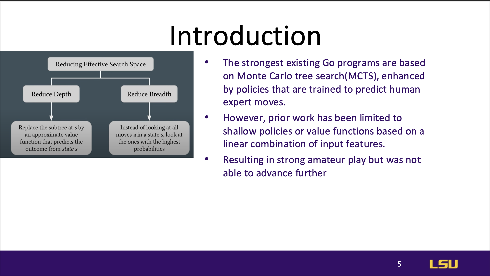
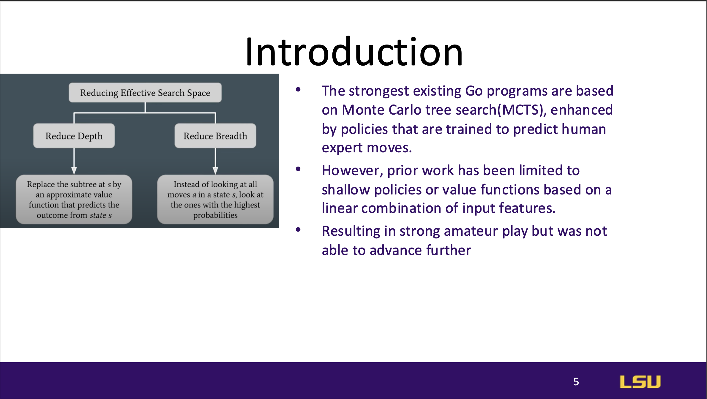
AlphaGo combines deep neural networks with Monte Carlo Tree Search (MCTS)
to address the complexity of Go. It leverages two types of networks:
policy networks to choose moves and value networks to evaluate board
positions.
AlphaGo initially learns from human expert games (supervised learning) and
then improves through self-play (reinforcement learning), achieving a
near-perfect win rate against other Go programs and defeating a human
European champion in a 5-0 series.
Architecture
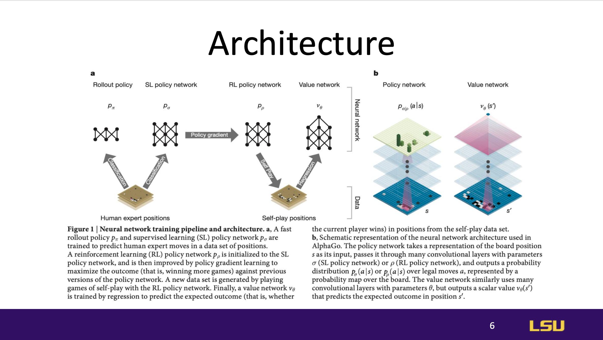
The AlphaGo architecture integrates neural networks with MCTS. This
architecture enables the system to learn complex patterns on the Go board
and make strategic decisions based on past experiences, balancing both
exploration and exploitation.
Policy Network
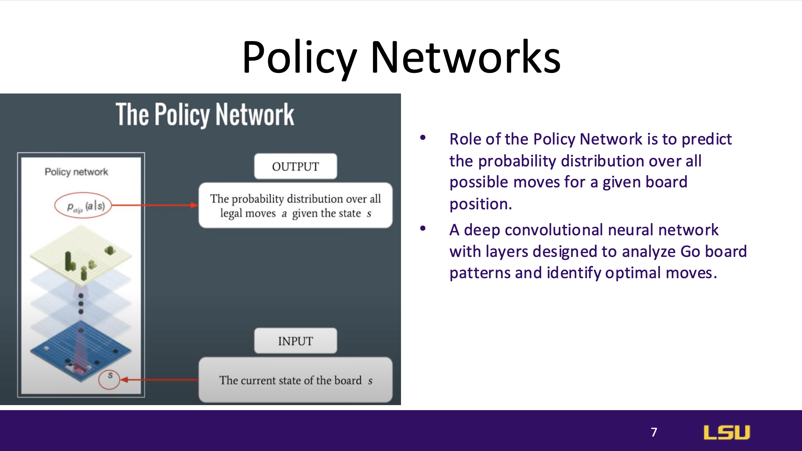
The policy network predicts the probability of possible moves in a given
board state, using deep convolutional neural networks designed to
recognize patterns specific to Go. This network helps AlphaGo prioritize
moves based on learned strategies.
Supervised Learning Policy Network
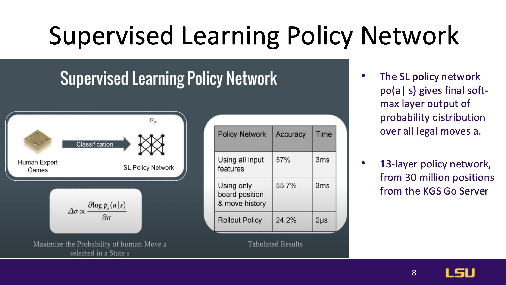
AlphaGo’s initial policy network is trained through supervised learning,
where it learns from 30 million game positions from the KGS Go Server.
This network outputs a probability distribution over all legal moves,
helping it replicate human-level play initially.
Reinforcement Learning Policy Network
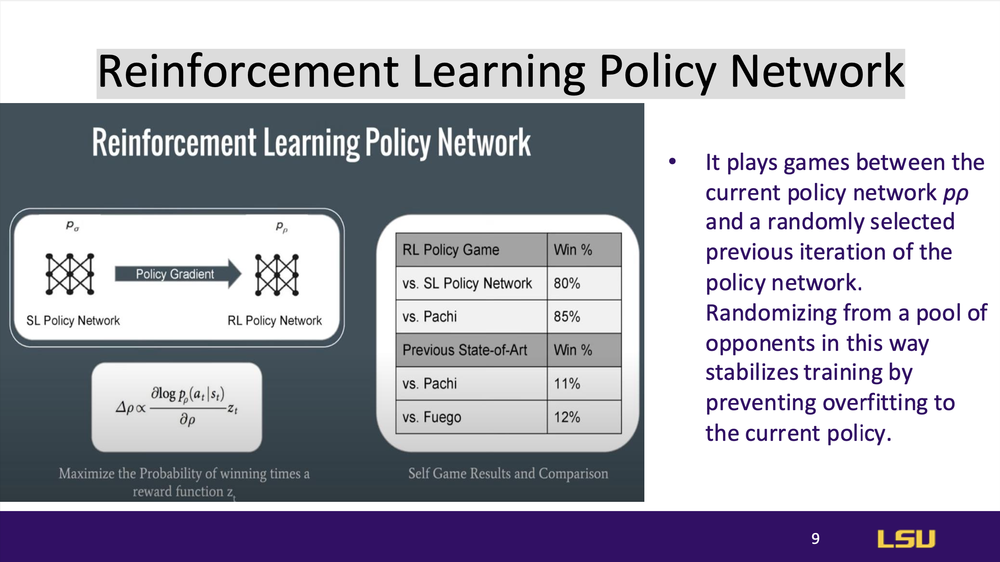
AlphaGo enhances the policy network through reinforcement learning by
playing games against past versions of itself. Randomly selecting previous
versions as opponents prevents overfitting, ensuring the network continues
to improve without bias towards recent strategies.
Value Network
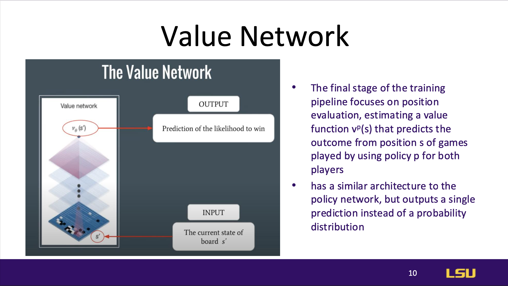
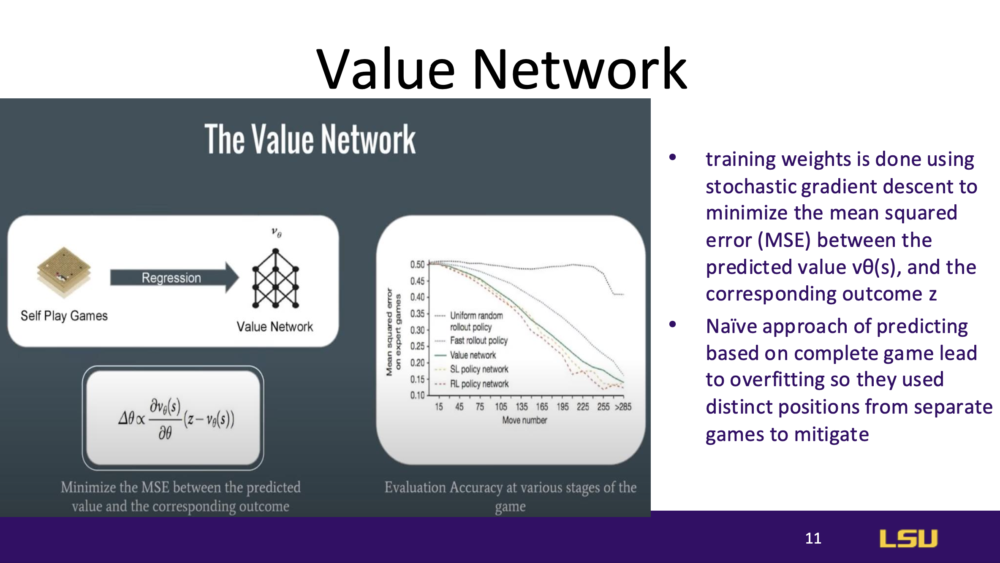
The value network evaluates board positions to estimate the likelihood of
winning from a given state, outputting a single prediction rather than a
move probability distribution. It is trained by minimizing prediction
errors using stochastic gradient descent, which helps stabilize evaluation
without overfitting.
Monte Carlo Tree Search (MCTS)
 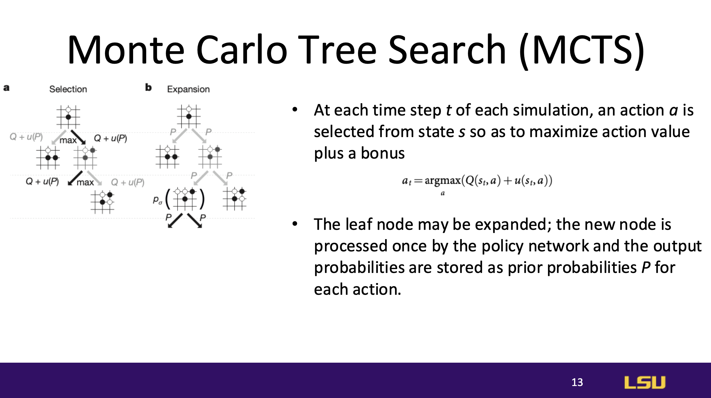
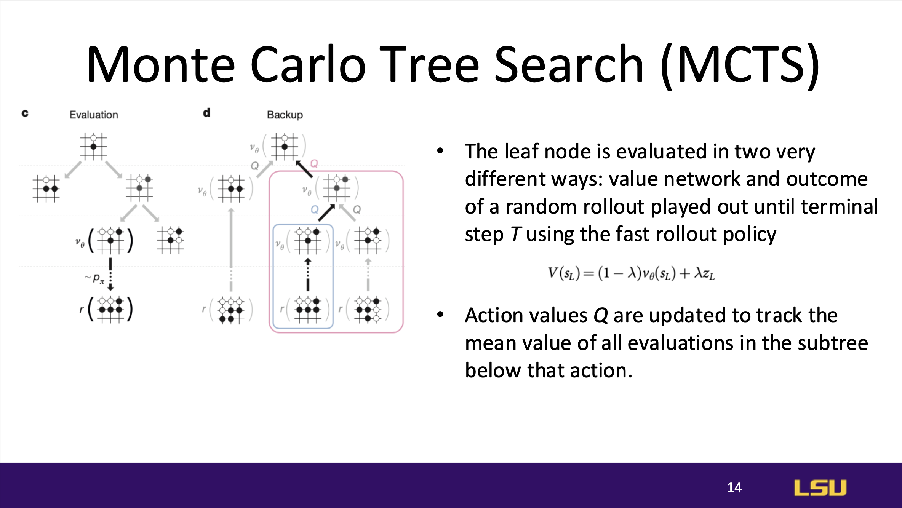
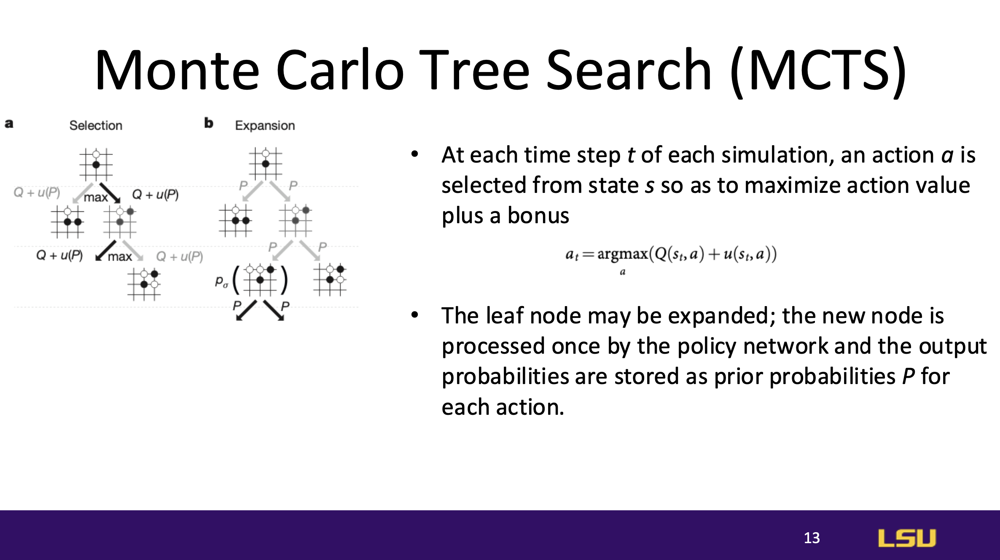
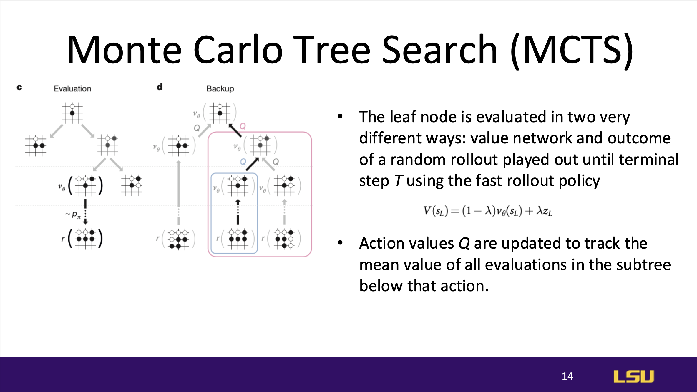
MCTS Process: MCTS iteratively explores possible moves by simulating
actions and outcomes to select the best move. At each step, an action is
chosen to maximize the action value plus an exploration bonus.
Evaluation Methods: Leaf nodes are evaluated both by the value network and
through random rollouts (simulated games to completion), which improves
the accuracy of action values for each subtree, allowing AlphaGo to refine
its move choices further.
Results
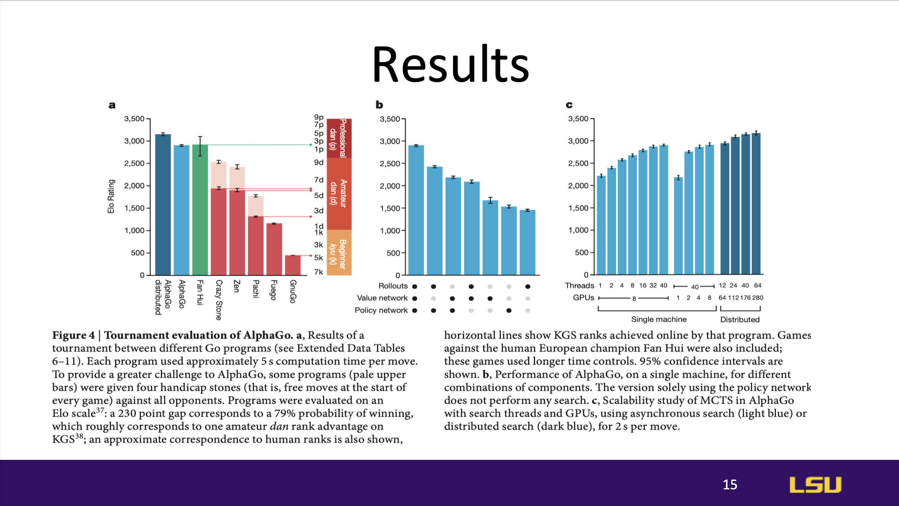
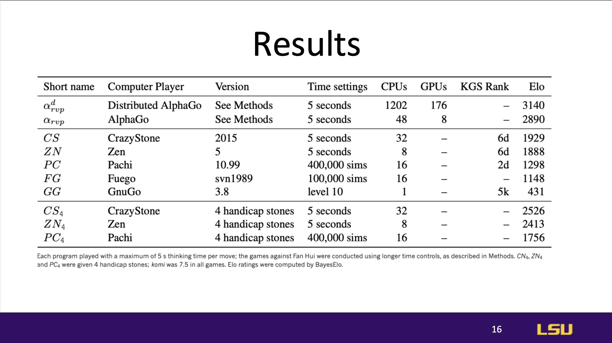
AlphaGo demonstrated strong general performance, achieving high success
rates across different test scenarios. The combination of neural networks
with Monte Carlo Tree Search allowed AlphaGo to perform at a level that
surpassed all prior Go-playing AI models.
Results against other models
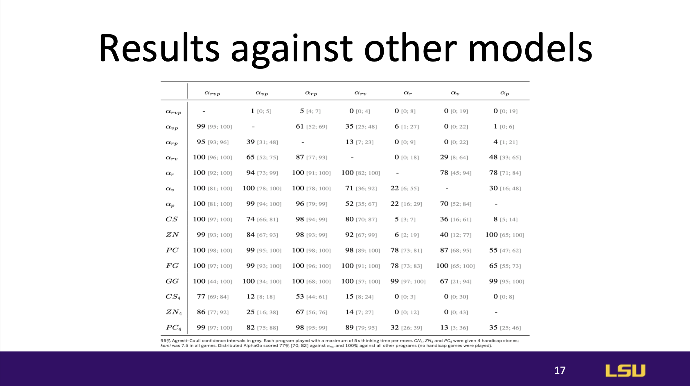
AlphaGo was tested against other leading Go models, consistently
outperforming them and setting a new standard for AI capabilities in the
game. Its success showcased the superiority of its deep learning and tree
search integration over previous models, which relied more on simpler
heuristic-based approaches.
Results against champion
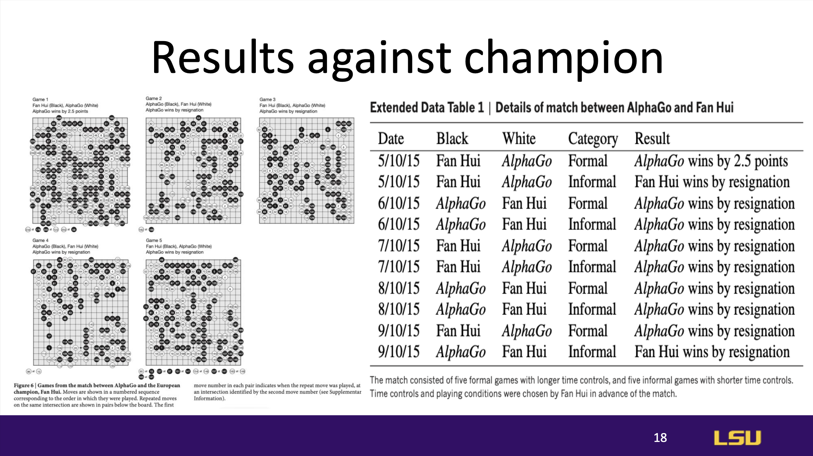
AlphaGo's ultimate test was a match against a human European Go champion,
where it achieved a decisive 5-0 victory. This milestone highlighted
AlphaGo’s ability to not only compete with but surpass human expertise,
marking a significant achievement in AI game-playing and strategic
thinking.
Conclusion
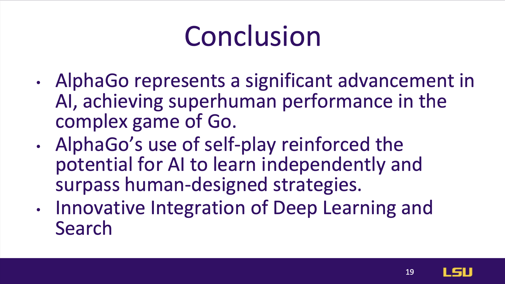
AlphaGo demonstrates that AI can achieve superhuman performance in complex
tasks through self-play and reinforcement learning. The integration of
deep learning with tree search techniques represents a significant
advancement in AI’s potential for strategic reasoning.
Teamwork
Paper’s References
Discussion Questions
Discussion 1: What other domains other than game simulation can AlphaGo be
used?
Financial Markets, Bookmakers
Discussion 2: What do you think are the limitations of this two-stage training
approach, and how might this influence AlphaGo's capacity to discover unique
strategies?
The limitation of two-stage training methods is that because they rely on
supervised learning, they need some expert games to have a good starting
point. And then in areas where you don't have access to those games, if you're
just trying to use it for something new, there's no good strategy to start
with.
This case is highly dependent on whether you can label, label the states,
label the states correctly. So you can actually do learning supervision
without this. The only difference in this approach is that it is able to learn
the value function of some states. So in any real life, uncertain scenario,
this is not a gap. I believe it is difficult to label these.
{kind=link}
{kind=link}
{kind=link}
{kind=link}
{kind=link}
{kind=link}
{kind=link}
{kind=link}
{kind=link}
{kind=link}
{kind=link}
{kind=link}
{kind=link}
{kind=link}
{kind=link}
{kind=link}
{kind=link}
{kind=link}